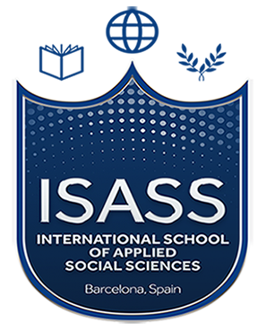

The Transformation hub creates opportunities for affordable higher education,
improves the
learning process and encourages mass personalized learning, engages students in the learning process, which is
conducted both online and face-to-face, creates opportunities for students to choose
what they need.
There are several number of programs that we offer for local students as well as foreign students.
Our partners

Over the long years of its activity TSEU has prepared and sent to the country’s service many skilled personnel. Most of the specialists who graduated from our university work in leading positions, in leading state and public organizations of the country. Many of them are annually awarded by various government orders and medals for a dedicated display of professionalism on the way in the interests of the country.

ISASS stands for International School of Applied Social Sciences. We are an international educational institution duly registered in Barcelona, Spain. We offer Diploma and Degree courses in partnership with different educational institutions in Europe and Asia. We bring our courses wherever our learners are and we work with them based on their learning curves and work phase.